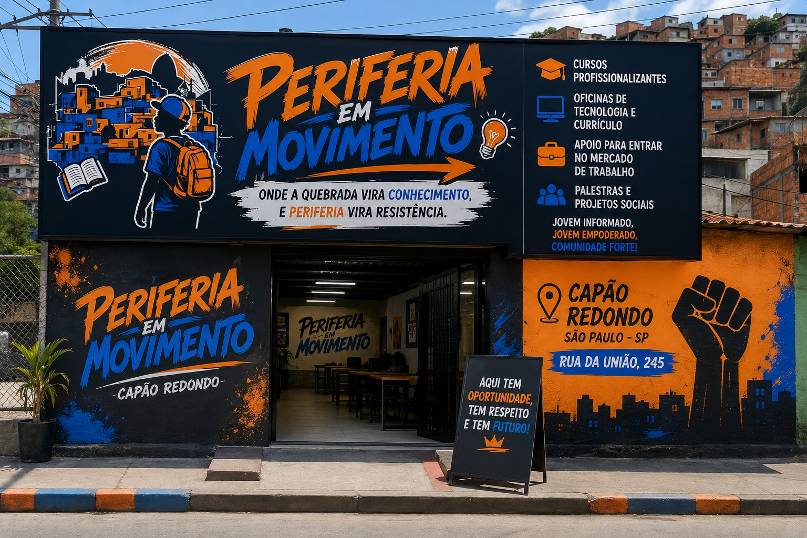

A Periferia em movimento foi fundada no início dos anos 2000 pela Dandara Silva, uma mulher cis e negra que tinha como o principal objetivo torna a educação presente dentro das periferias, então assim nasceu nosso projeto que traz a periferia um lugar de aprendizado voltado ao mundo do trabalho.

A Periferia em Movimento está localizada no bairro do Capão Redondo, na cidade de São Paulo. Endereço: Rua da União, 245 – Capão Redondo, São Paulo – SP.